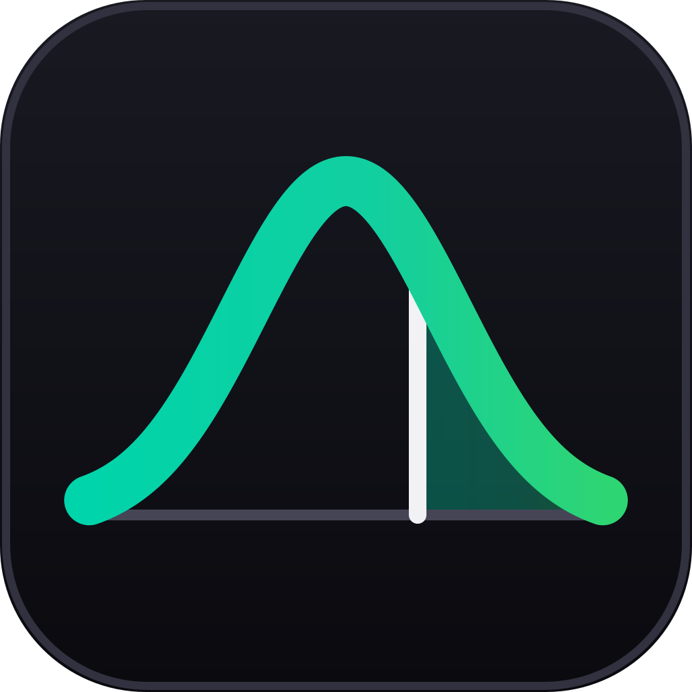
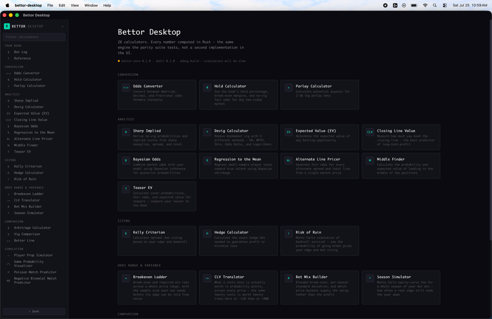

BETTOR·DESKTOP26 sports betting calculators, a bet log, and a variance module — as an offline desktop app with every number computed in Rust. Built to demonstrate one thing the usual tools hide: what the price of your bets does to your ride, even when every one of them is +EV.
No binaries published yet — build from source, one command.
A 5% edge at -110 and a 5% edge at +400 have identical expectation and completely different consequences. The difference does not show up in any EV calculator, and it is the difference between a strategy you can actually hold and one you will abandon in March.
| Price | SD per unit | Bets to clear 2σ | Median drawdown | Losing seasons |
|---|---|---|---|---|
| -110 | 0.95 | ~1,440 | lower | 32% |
| +400 / +600 | 2.04 | ~6,640 | much deeper | 45% |
Same expectation, four and a half times the evidence needed to prove it. The losing-season figures are a real 3% edge over 200 bets — genuinely profitable, and down at the end of the year almost half the time at the longer price. Every number here is asserted by a test in the repo.

Required win rate across a whole price range — and the sample size each price needs before its edge can be told from noise.
What a cents move is actually worth in probability points. The same twenty cents is worth twenty times more at -110 than at +900.
Blended breakeven, per-season standard deviation, and which price buckets supply the swing rather than the profit.
A Monte Carlo equity-curve fan for a whole season of your actual bet mix. Seeded, so any figure you quote can be reproduced exactly.
Local SQLite. Records the price you took, the close, and the opposing close — because without both sides the vig cannot be removed and any edge you compute is overstated by half the hold.
A spread and a total together pin down a per-team standard deviation and the correlation between the teams — ρ ≈ −0.27 in football, +0.31 in basketball. Nobody posts either number.
Devig (five methods), hold, EV, Kelly, arbitrage, hedging, parlays, CLV, middles, teasers, alternate lines, Bayesian updating, regression to the mean, prop and match simulation, risk of ruin.
Rendered with KaTeX, inside the binary. A desktop app that needs a network connection to explain its own output is not a desktop app.
This started as a port of a working Next.js app. Replaying the original TypeScript against the new implementation surfaced nineteen-plus bugs, and almost none of them were formula errors. They were seams — a scale, a sign, or a convention that changed meaning across a function boundary, where nothing crashes and every number looks plausible.
q/S inside the radical where Shin (1993) has
q²/S. The bisection had no interior root, so the method
silently returned the same numbers as proportional devigging — the app
offered five devig methods and two of them were the same one. On a
-1000/+500 market the longshot's fair probability moves 0.1550 → 0.1288.
Two opposite sign conventions for a spread met inside one function. A symmetric -5.5 / -110 middle reported the favourite covering 32.4% when the answer is 50%. Confirmed by running the original, not derived on paper.
A raw vigged probability fed straight into Φ⁻¹ — eight tenths of a point of pure hold, presented as market information. The whole alternate-line ladder was built on top of it.
"Closing Line Value", "Edge (cents per dollar)" and "Expected Value" were the same expression. And that expression is a ratio of decimal odds, which ranks +400→+350 (11.1%) above -110→-130 (7.9%) — when in probability points they are 2.22 and 4.14, the opposite order. That is exactly the misconception this project exists to correct.
Every one is catalogued with its reproduction. The port is held to the original by 803 golden vectors captured from the running TypeScript: a mismatch fails the build, and so does a stale declared difference, so the list cannot rot.
Speed was never the argument, and the benchmark says so — scalar work is
a wash or slightly slower, because Rust pays for a range check where the
original returned null and hoped. That check is what stops
a spread typed into an odds field from returning a plausible price.
Needs Rust (stable), Node 22+ and pnpm. There are no published binaries yet.
# clone, install, run git clone https://github.com/adamwickwire/bettor-desktop cd bettor-desktop pnpm install pnpm tauri dev # the gate: clippy → cargo test → svelte-check → vitest → build pnpm verify # produce a bundle for your platform pnpm tauri build
cargo test -p bettor-core, no webview required